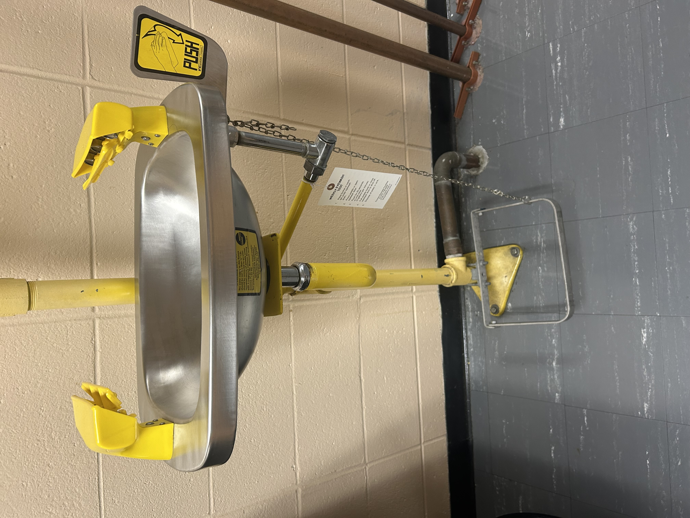
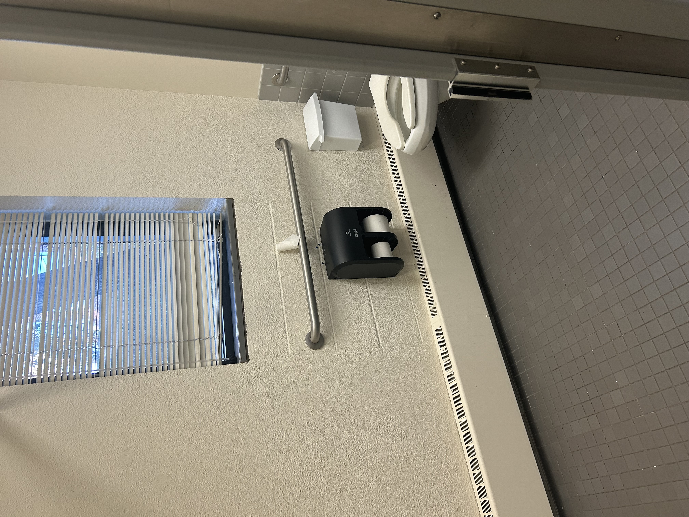
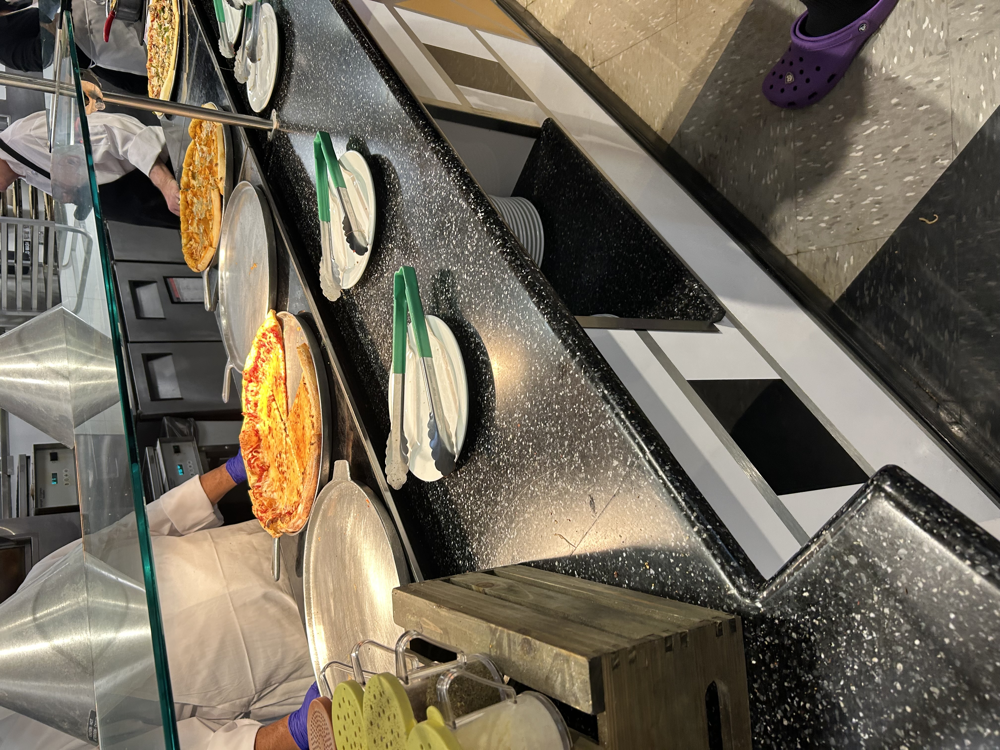
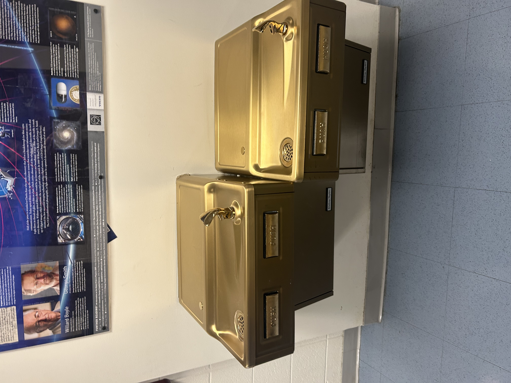
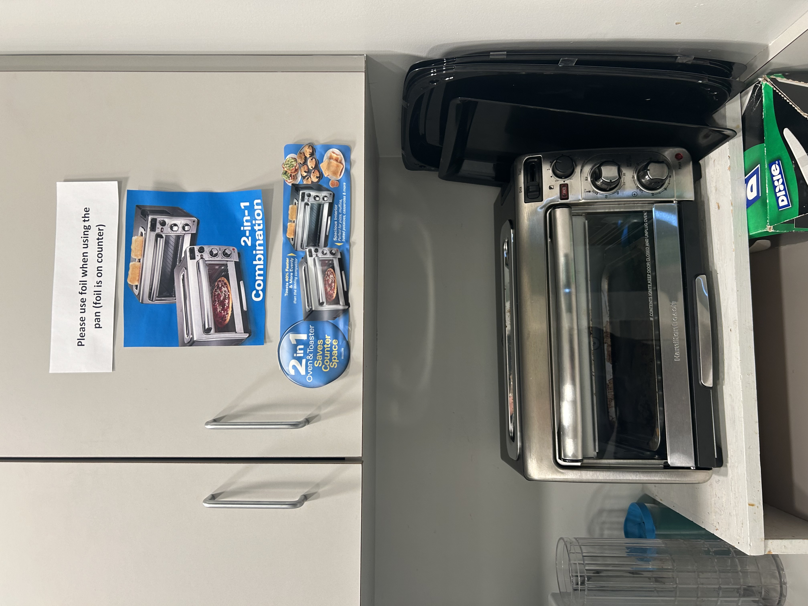
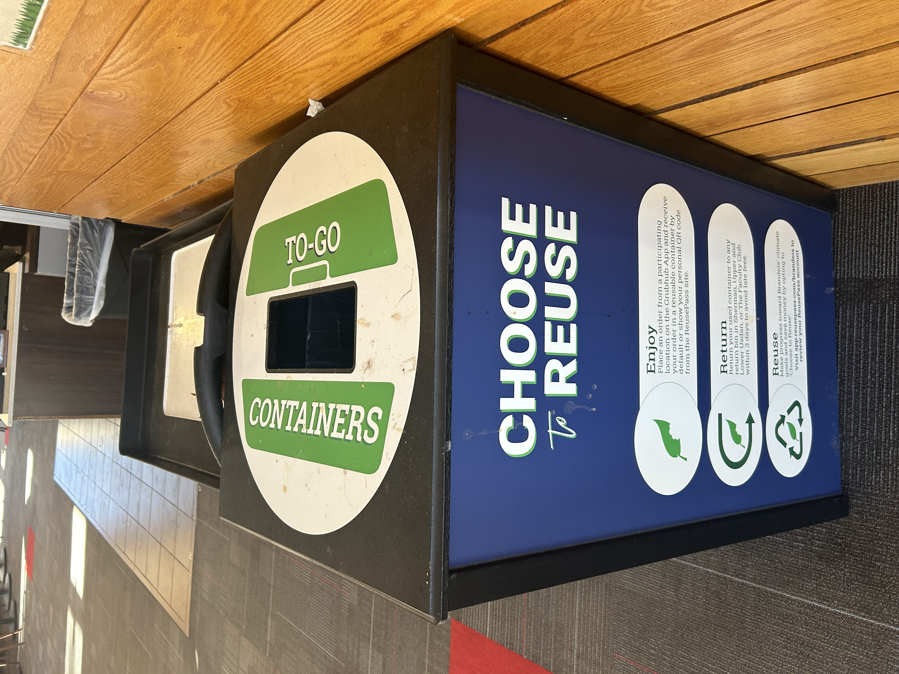
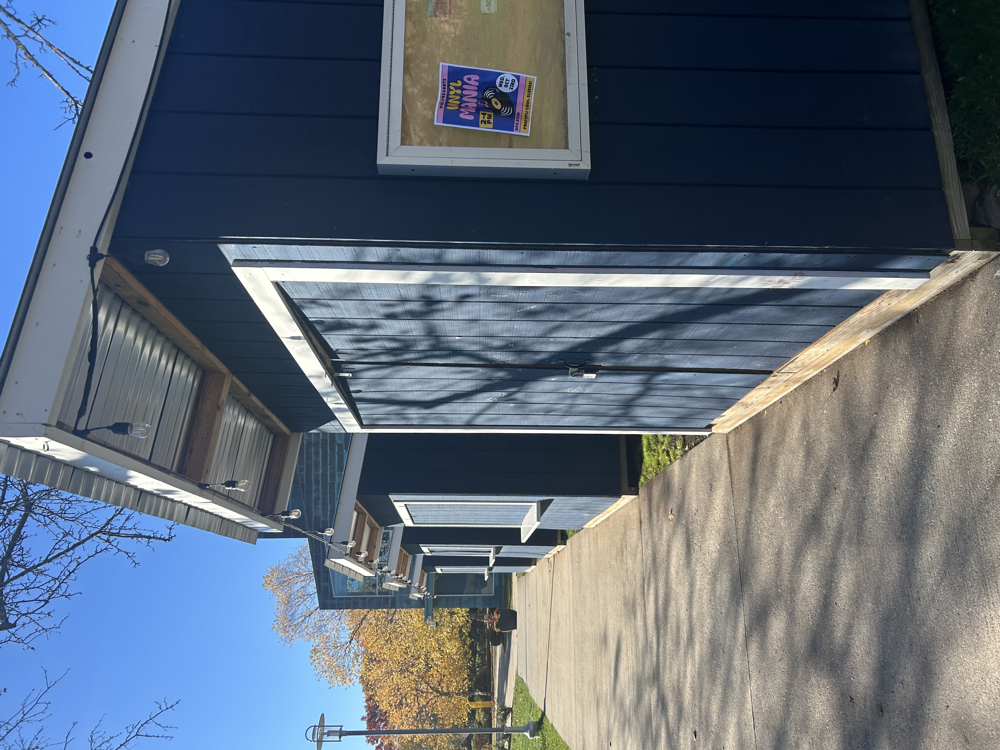
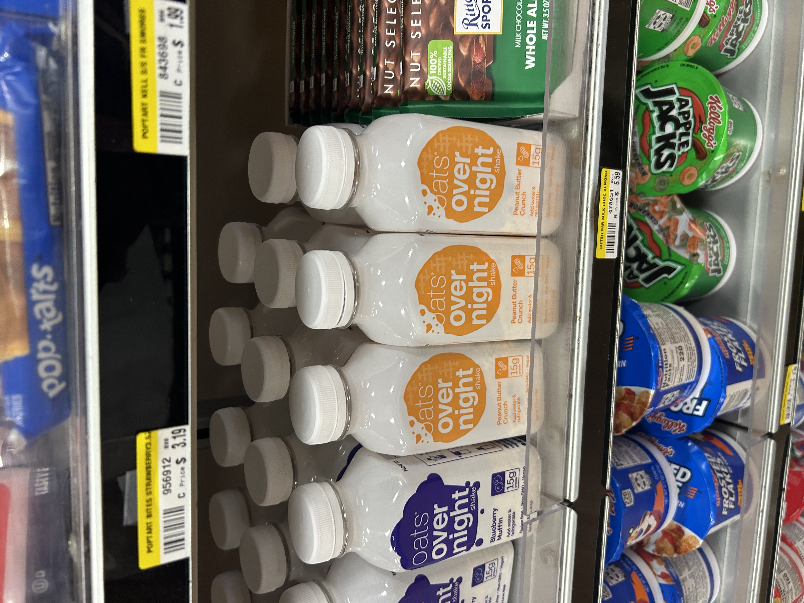

Pre Project 5: Evidence of Design Scavenger Hunt 10/25
Design for Access 
Eye wash station
Navigation without one or more of the 5 senses- The eye wash station has a foot pedal for when your eyes and/or hands are not functional. It is designed for easy use when vision is impaired and/or hands are soiled.
Bars in bathrooms
Forms of assistance- The bars on the inside of larger bathroom stalls assist those who need physical support.

Elevators
Aging- The elevators in the library help older people who might have a harder time using the stairs.
Pizza
Young children- There is always cheese pizza served at the dining halls. It is curated this way to cater to a broad range of taste preferences, including young children.
Lower water fountains
Wheeled mobile gear- There are lower water fountains placed for wheel chair users and young children.
Designs Against Access

Barriers
Physical barriers- The flammable materials are locked in a cage for safety purposes and gated off with construction markers. This is also because of the equipment placed nearby.
Unclear toaster
Lack of Information- This toaster oven is not intuitively used, so someone has used the packaging to fill in the lack of information.

Emergency buttons
Absence of help- There are a lot of emergency buttons on campus that are not functional and are taped up, a literal absence of help.
Design Priorities in the Built Environment

Period rooms
Historical specificity- The period rooms in the library are dedicated to Louis D. Brandeis and include real historical items. They are designed to remind users of the space of the schools history.
Choose To Reuse
Environmental sustainability- The Choose To Reuse program has students use and return plastic containers for their food. They are washed and put back into circulation, minimizing waste.
Fellows Garden booths
Health and well-being- The Fellows Garden booths were designed with COVID protocols in mind, allowing clubs to host events outside and socially distanced.
Overnight Oats
Convenience- The overnight oats in the C-Store are designed for convenient and quick morning meals.